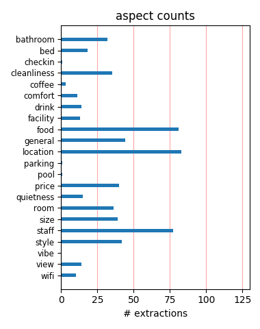
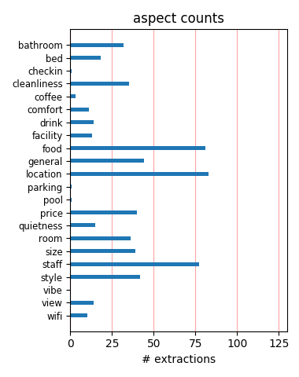

This is the fourth time of staying at this hotel. Its clean and tidy, but rooms can vary in size. Its in a good location with many restaurants, cafes in close proximity. Reception staff not so friendly this time as on previous occasions though.
This hotel is close to all first time tourist attractions, very clean, staffs are friendly. I speak french but staff always willing to help out in english. Prices all depend on which deal you get. Close to subway for travel if on business. Woul recommend
I really enjoyed staying at this hotel,hotel stuffs is all very kindness and heve a nice smile. I was comfortable to stay, because room is clean, rocation is very nice to go to city trip. I can recommend this hotel Thank you for your kindness, next time I'll stay
This hotel is very close to american standards yet still very French. The sleeping rooms are larger, the bathroom very large and nice. Very much a business travel type hotel. The sleeping rooms has all the appointments of a US business hotel, desk, comfortable chair for reading.
The room and bed are big. The breakfast starts from 7am to 2pm, although the selections are limited. The juice & pastries are most welcomed. The location is quite good & convenient to various attractions. A bottle of white wine is free from the hotel but the quality is not in high standard.
A most enjoyable experience.We last visited the hotel 20years ago for our silver wedding and returned for our 45 years of marriage anniversary.It would be nice if we can come back for our 50 years celebration.Which god willing we will achieve.Many thanks to the staff and especially Vincent in the bar .
We stayed at this hotel only for one night in december. The hotel was beautiful and clean and very close to all the main attractions. The staff were very helpful and friendly. The rooms were lovely and very clean. I would definitely recommend this hotel and I plan to go back next year for a longer stay.
Great place to stay if you plan on walking Paris or using the metro. We did not eat there (breakfast was available) because we prefer to venture out for food and try different places. It is a little pricey but considering the location and the suite we had (although paid for a room) it was very much worth it.
We were lucky and upgraded to a Jr. suite which was fantastic. I didn't know rooms could be that big in Paris. The staff were excellent and of course the room was fantastic. The Champs-Elysees is a bit too touristy and chaotic for my taste but the hotel was a really good deal and a nice way to close our trip.
Rochester is a beautiful hotel, very well located. The staff is helpful and friendly. Confortable room, big bathrooms... Many positive points! The only negative point is the small area for breakfast, sometimes we had to wait to get a table. But we have always been compensated with a delicious breakfast and services.
My trip to Paris was again made special by the staff at the Hotel Rochester. They had everything ready for my arrival (driver at the airport, room, and all requested reservations). Every time I needed something it was taken care of...directions, tickets, etc. I will definately contact Hotel Rochester the next time I am heading to Paris.
Great value, service excellent,off the main boulevard but only by 300 yards or so ST PHILIPE DE ROULE METRO within 50 yards of the hotel made it so easy to cross Paris and see the sights.Breakfast was usual buffet well served in choice.Take SAS busfrom CDG AIRPORT to etoile THEN a lovely walk down the CHAMPS ELYSEE AND DOWN RUE BOETIE TO HOTEL.
Recently stayed at the Hotel Rochester in Paris. We had the pleasant surprise of an upgrade to a suite. It was beautiful The staff is very friendly and helpful. All spoke English. The bartender, Vincent, was very friendly and professional. The Hotel is in an ideal location just steps from the Metro. I will absolutely recommend it to my friends.
Stayed here for 5 nights in September. Found staff very helpful. Room was largest I have ever had in Paris - and very clean and comfortable! HIGHLY recommend - while it is close to the Champs Elysee, if you walk in the opposite direction, lots of off the beaten path shops and restaurants (i.e. affordable); and many markets within walking distance.
We were able to get a great package deal including breakfast, Seine cruise and a bottle of white wine. The room was lovely and spacious, and 5min walk to the Champs as well as close to a Metro station. Staff was lovely and must say the breakfast was great, lots of variety, fresh baguettes & croissants as well as hot food (bacon, scrambled eggs, sausage etc)!
Found this hotel on Trip Advisor last year when my son and I went to Paris for 5 days. It was all I had hoped for - the room was lovely, a small suite with no view but still charming. It's a walk from the Arc de Triumphe and I don't think any of the rooms have a great view but it really is a great little hotel and close to the Metro which made travel very easy.
The Rochester Champs-Elysees hotel was a delightful little hotel in the heart of Paris. The staff was so helpful especially the concierge, Roshan, who was extremely responsive to all my needs...and always with a smile! The hotel is ideally located in the middle of all the attractions! The Champs-Elysees is a couple of blocks away and the shopping is wonderful!!!
Great location, terrific breakfast, many good cafes and restaurants in the area, near 2 metro lines... Very elegant hotel, good service, etc. We got a great deal on Travelzoo.com at approx. half the normal rate. We definitely go back again. Only complaint were the air-conditioning didn't cool the room sufficiently, and the wifi internet in the room waas much too expensive.
Very nice location and super friendly staff. I was particulary impress by the Owner asking me if i enjoyed my stay in his hotel while i was having my excellent breakfast. The room are lovely, all newly renovated which for Paris standart is not very common. I would certainly go back and recommend it.... The spa was such a treat after my working day... excellent service overall.
I have now been a regular customer since years to that Hotel, mainly for business trip. The service is good; staff is very polite and competent. The rooms are decorated in an old classic style, beds are comfortable. The situation is very good (near the champs elysée). Breakfast is nice, although not amazing. I recommend this hotel for its good situation,nice rooms and friendly staff.
I stayed in this hotel for 2 nights, booked through a Travelzoo offer. I think my room was recently refurbished,, but don't know if they all have been. Room was a spacious double with a very comfortable bed. It's in a great safe and quiet location just 200m off the centre of the Champs Elysees.I would be happy to stay again at the price I paid, but that was a lot less than the rack rate.
Brilliantly located near the Champs Elysee. Room was bright and spacious with separate sitting area and bedroom. Bathroom had powerful shower which is a rarerity in Paris. One small complain even though 4* did not have coffee making facility in the room, maybe it is a french thing! (am British). Coffee was 5euro a cup, so not that cheap but overall very happy with the hotel. Breakfast was also good
Just off the Champs Elysees. this comfortable hotel brings you to an attractive and vibrant area of paris. The Hop-on, Hop-off bus stops at the end of the road. The Arc de Triumph is a short walk away. There are many interesting bars and places to eat in th streets off the main boulevard. The hotel itself is beauifully appointed and the staff extremely helpful. Breakfast is available from 7am to 2pm!
Wow what a suprise, a hotel in Paris with BIG rooms, ask for the rooms overlooking the courtyard as this will ensure that the din of the Taxis picking people up at 5 in the morning cannot be heard. Breakfast (23 euros unless part of your package) is excellent and lasts till 2pm!! Hotel staff can't do enough for you and they make it all worthwhile. All in all a very pleasant suprise and one I would recommend.
Nice hotel, staff were friendly and helpful during our stay. Minibar in room very over priced as normal but there is a supermarket just down the road from the hotel which is well stocked and good price so recommend going there and just using the minibar to cool the drinks! Breakfast was ok but expensive for what it is! Apart from those things would stay at the hotel again as was pleasant and very well located.
Great Location - hotel is very close to my office, shopping and the metro (great little bakery around the corner that is open early as well as a Starbucks!); Rooms are not the fanciest but has everything you want on a business trip or an active site seeing trip to the city; Very easy to book with their online system and staff is very responsive to letting you know if there is availability; No surprises at check-in and room was ready early;
The hotel is in a very good location and of a very good standard. I would recomend it. But dont drink in the bar its very expensive!! The staff at the hotel are both friendley and helpfull. The hotel is situated 5 mins walk from the champs elysees. We walked most places but took the red bus on the first day to get our bearings. Lots to do and see all within easy reach by foot of the hotel. We had a great long weekend with nothing to complain about.
The hotel itself was a good value through tripadvisor. We found the room and bathroom to be quite large and clean. However, the walls are very thin. You can hear people using the bathroom and the plumbing was quite loud. Our room also had a strange smell similar to waste or sewer stench. Aside from that, the location to subway was less than a minute walk or three minutes if you use FDR entrance. It was very close to champs-élysées which was a huge plus for us.
Hotel Rochester is in a fabulous location, within walking distance to many Paris landmarks including the Eiffel Tower. We stayed at this hotel for our honeymoon and found it the perfect place to stay. The rooms were clean and the hotel and spa were beautiful. The staff were extremely friendly, helpful, and fluent in English. We were lucky enough to get our room at a 60% discount, if we hadn't I would consider it overpriced but then again it's Paris and most things in the tourist areas are.
We arrived at 1200, we waited 30 mins for room to be cleaned, once in room, very impressed, very clean spacious room. Excellent view, good bathroom, with fridge/mini bar. The location was best part of hotel, 30 secs walk to metro station which was brilliant for getting around a large city like paris, and 3 min walk to centre of champs elysee and arc de triumpe. We paid £420 for 3 nights thru cresta, well worth the price even though we only stayed for 2 nights because the 3rd night was free .
We couldn't have asked for a better hotel for our stay in Paris. The staff went above and beyond to help us from the minute we arrived. Our room was spacious and immaculate. We booked our room through a special and recieved breakfast as part of our stay. Our son left his iPod in the room and they have been very helpful about finding it and working with us to get is mailed. The location cannot be beat. We were walking distance from two metro lines and the Christmas market on the Champs Elysees.
There was a family group of 11 people staying at this hotel for 3 nights. The location is very good as the street goes onto the Champs Elysees & is 5 minutes walk to the Arc D' Triomphe. There are a lot of good cafes & restaurants nearby. The hotel restaurant is quite expensive with breakfast at 25 euros but it was very nice. Rooms were clean & quite spacious.There is a spa at the hotel.The staff are very helpful.The metro is very close & the hop on hop off tourist bus can be boarded at Arc D' Triomphe.
Just returned from a second honeymoon in Paris. Hotel was clean; modern and in the center of the Champs. The room we stayed in was spacious and clean. The only thing we will tell all travelers is that if you are seeking to spend a great deal of time on the left bank (especially in the evening and late evening hours) then this hotel may not be in the ideal location for you. Notwithstanding the above, the hotel is adjacent to the Champs and near two metro stops. We could not be any happier with our selection.
We had a super four day break in this lovely hotel. All the staff are very pleasant and friendly from reception, concierge and dining room. We had a lovely quiet room overlooking the courtyard which was very clean and well serviced with a large comfortable bed and very soft pillows. The bathroom had an excellent shower. The situation of the hotel is excellent, we walked to the Arc de Triumph down the Champs-Elysees. There is a supermarket just across the road and two very convenient metro stations. All in all a lovey break.
We stayed for 4 nights in a junior suite which was large by Paris standards. Very comfortable - good quality king size bed, nice pillows. Bathroom was large, modern and clean with plenty of towels. Nice lobby, helpful staff. Only drawbacks was the small elevator, as they were repairing the (I aaume bigger) main elevator as well as the cost of breakfastl.. Breakfast buffet or room service continental breakfas ( we didn't have either one) were both overpriced - an additional 25 Euros PP! Nice little health club. We'll go back.
One of the great things about this hotel is its location. It's a 5 minute walk to Champ Elysees and I like that it's not directly found in Champ Elysees since that might cause some noise from all the people walking around. When you relax in your room, you can really feel the peace and serenity with the quiet atmosphere. The room and bathroom are quite clean with the beds comfortable to sleep on. I found the breakfast selection a bit limited yet fulfilling and delectable nonetheless. A nice place to stay in to enjoy lovely Paris.
We spent a week at the Rochester in August and I cannot recommend it as a four star experience. The room's carpeting was stained, there was mold in the shower and the towels were horrible. Most of the staff were nice amd spoke excellent English. There is a metro stop a few steps away, but you need to change trains at the next station to get anywhere near the major tourist destinations. As described in previous reviews, the internet hardly ever worked. We did get a courtyard room and it was pretty quiet. I would not stay there again.
This hotel has a great location just 2 minutes walk from Champs Elysees. Room was a junior suite, loads of space and well maintained. Breakfast fairly typical for a paris hotel with a great selection and the breakfast room was well staffed. The concierge was very helpful on the morning of departure but the male receptionist on both evenings was not at all welcoming. The check in experience was borderline rude. The checkout on sunday morning was the complete opposite efficient and polite. I would highly recommend this hotel as a base for visiting Paris.
We stayed at this hotel for 3 nights during August. The Hotel is in an excellent location, there is a tube stop just a half minute walk away and the Champs elysees just a 5 minute walk. The mini bar prices were very expensive, but there is a supermarket across the road which was very useful. We had breakfast bought to our room every morning with a selection of croissants, rolls, yogurt and fruit. The room was bright, clean and nicely decorated and overlooked the small courtyard. All in all we had an excellent time and would recommend this hotel without hesitation.
we stayed at this hotel for 3 nights during August. The Hotel is in an excellent location, there is a tube stop just a half minute walk away and the Champs elysees just a 5 minute walk. The mini bar prices were very expensive, but there is a supermarket across the road which was very useful. We had breakfast bought to our room every morning with a selection of croissants, rolls, yogurt and fruit. The room was bright, clean and nicely decorated and overlooked the small courtyard. All in all we had an excellent time and would recommend this hotel without hesitation.
Room and hotel are dated in their furnishings, but clean. Concierge staff were excellent and very helpful. Bar was small but nice. Gym virtually unused, in mint condition. Elevators tight and small but quick. Breakfast was expensive, we went around the corner to a patisserie instead. Excellent location, and near a metro station added convenience. Do not drive there - tight and congested roads. Sleep was very good, but had noisy children and heavy-footed adults upstairs from us. Would consider using again, but with so many hotels in Paris I'd like to visit others first.
Lovely hotel, extremely friendly staff. We were staying with a small child (20 months) and the staff were great with him. The hotel was extremely clean, the rooms were a good size, air con was needed and worked great and the bathroom was fully stocked with goodies! There was no noise from other guests so I assume the sound proofing was good. Breakfast was wonderful with lots to choose from - bacon, eggs, croissant, cheese, meat etc. The nearest metro is 1 minute walk away and the Champs Elysees is about five minutes walk. All in all a thoroughly enjoyable stay in a lovely hotel.
We booked this travel zoo hotel special at the last minute and were wonderfully surprised. The hotel did upgrade our room to a huge, courtyard view room (we celebrated our 30th wedding anniversary) and had our room ready after the long overnight flight to Paris.Our morning breakfast buffet( included in the price of the room) included omelets cooked to order and a great assortment of fresh french specialties(smoked salmon,cheeses,quiche,tarts).The staff was very hospitable and appreciative of our limited french, assisting us in english.Can't say enough about this hotel and location !!!!
Quick trip from NYC, we stayed over New Years. Lovely hotel, great staff, excellent location. Located about 2 blocks off the Champs Elysees. Walking distance to Arc de Triomphe. We walked over to Eiffel tower easily. The room was small but lovely, good bathroom over looked the garden below, great heating! The breakfast was excellent (it was included for us), great little bar. Metro stop close by. Very clean, quiet. Tiny 2 person elevator, which was hilarious but the hotel is building another one. Would definitely stay again! And don't be worried if you don't speak French, the staff is wonderful!
My wife and I thought this to be a very comfortable hotel within easy walking distance of most of the main Parisian attractions. Our stay was marred by our room (102) being subjected to irregular banging noises during the night - a noise similar to that made by a swing door - is room 102 over the kitchen? We complained in the morning and were immediately offered an alternative room. We did not accept as we were only staying one more night. We are unable to comment on breakfast as we found the delay for service unacceptable. We would stay at the Rochester again but not in a room on the first floor.
This hotel had a great location. Located only about two blocks off the Champs Elysees, you escape the noise, hustle and bustle of the crowds. Not overly difficult to get to by the metro either. The staff was very pleasant and always helpful. Our room was good size--much bigger than most Parisan hotel rooms--and the bathroom was large as well. Our I would pass on the breakfast--it is 25 Euro for nothing spectacular. Instead, hop over to Franklin Roosevelt avenue and enjoy one of the cafes. The breakfast is much cheaper, and the outdoor seating affords a great people-watching spot of the morning commuters.
From the moment we arrived at the Hotel Rochester to the day we left, we received wonderful service, lots of good information on places to eat, drink, and directions to get there. The hotel is ony a few blocks from the Champs Elysee, and within walking distance of fine restaurants, bistros,shopping, , the Metro, and the local bus lines. We found it very easy to get around Paris from this home base. The hotel accomodations are comfortable, and the addition of breakfast made the price of the room a bargain. We definitely would consider staying here again, if we are lucky enough to come back to Paris in the future.
This is a charming hotel, with great amenities. The rooms are not large, but I've seen smaller ones. But very comfortable, with a large bathroom. My window faced the courtyard so it was very quiet. A delicious breakfast buffet, which is expensive at 25 euros, but it was included in my rate, so I was very happy with it. They even have a workout room downstairs which is quite good, and I seemed to be the only one using it during my stay. Free wifi, and they even gave me a 2nd key so I could be online with my PC and my iPad both. But the nicest thing was the staff. They really bend over backward to help you with anything you need.
My wife and I just returned from a 3 night stay following a river boat cruise.The hotel was beautiful,the staff friendly and helpful and the location has to be among the best in Paris for access to the various attractions in the city.It was just a few minutes walk from the Champs-Elysee and very close to the Metro,which is very easy to navigate. We had a special rate with breakfast included and were upgraded to a junior suite which was spacious and had a partial view of the Eiffel Tower.The breakfast was very good and the dining staff very courteous.I would highly recommend the hotel,particularly when a discounted rate is offered.
We stayed here for 4 nights and can only say it's an excellent hotel, wonderful stay, lovely and clean and very comfortable. The only negative for us was that we had asked for a family room and the only place for a single bed was at the foot of the double bed which meant having to climb over the main bed if someone was at the dressing table. Breakfast was excellent and the staff were quick to clear a table. The selection was very good and always plentiful. It's only moments to walk to the Champs Elysee, there is a tube station literally round the corner from the hotel and eating places are plentiful. Would recommend to single/couples/family.
We enjoyed staying at this hotel: the best feature of it is its location practically on Faubourg St Honore, within easy walking distance from Champs Elysees, The Elysee Palace. The room was good size (especially for Paris!), well appointed, the bath facilities, although slightly narrow, excellent. Service (of the room) was very good, the concierge services though need improving (the wake up call was never made, the taxis came either too early - 1o min - with the meter running, or too late - 25 min.) The registration staff was very prompt and courteous. The common areas, the lobby , the exterior of the hotel look quite impressive and very pleasant.
My husband and I been in this hotel for two nights. We only have nice things to say about the staff and facilities. Spotless room and helpful and polite staff. The only thing we would improve would be the bed size, we are used to a king size at home, so a double was quite small for us. We thought the breakfast was expensive at 25 euros, but we had it included in the reservation. Great location, two minutes from Champs Elysees and Montaigne Av., so if your intention is a shopping trip is perfect, but close to the Eiffel Tower and Triumph Arc too. We thougth restaurants around the hotel were expensive, but always depend of your pocket. Over all, really good hotel.
We stayed an entire week at this hotel in late January 2012 with white tablecloth breakfast service included in the Sceptre Tour that left us on our own. It has a beautiful quiet lobby with complementary newspapers and 24 hour concierge. The staff was friendly and went above and beyond to help with our problems not associated with the hotel. The room on fifth floor overlooking courtyard was charming, and marble bathroom was immaculate. It is about 2 1/2 blocks from Champs Elysee, near a grocery, restaurants, several ATMs and St. Phillippe de Roule metro station. All in all, a lovely hotel experience we would repeat before chancing anyplace else. Highest recommentation.
i was in paris for spring break with my family. I was having a hard time finding a hotel which would accomdate 3 adults and 1 child and finnally found Hotel Rochester and what a great choice. It is in a great location. We were in paris for 4 days and the location of the hotel helped us to visit all the main attractions. It is 3 blocks away from the metro and champ elysees. The hotel was very clean and kept up. I stayed in a jr suite and it was perfect for my family. The hotel staff in very helpful. The only this is that i found on the down side is that the hotel breakfast is very expensive for what it is basically a continental breakfast. Other wise i highly recommended.
This was our second stay at the hotel Rochester. Although the staff are not "overly" friendly, they are accommodating nonetheless. We booked the double suite and were very comfortable . . . our two boys in one-half and my husband and I in the other half. The beds are extremely comfortable and our room had an excellent view of the Eiffel Tower . . . which had a magnificent light show for Easter. The only detractor was the leaky shower! The connector for the shower hose squirted water everywhere! A hotel of this caliber (and price point) should not have a leaky shower. In all, we would definitely stay in this hotel again. Access to the Metro and the Champs-Elysees is fantastic.
I have just ended a stay in the Rochester Hotel Champs-Elysees it was very pleasant stay. This hotel hotel is ideally located in the axis of the Champs Elysees. The staff is very helpful and compétant. I was warmly received at the reception. The Rooms are in e very modern style and spacious, and recently refurbished. The hotel propose a very pleasant and very comfortable SPA particularly after working day. This SPA services are included in the room price. It's really to be noted. The morning breakfasts are copious. The staff is really compétant and so nice. I go to Paris for business twice per month and this hotel is really one of my favorite adress to sleep when I go to this district.
We had passed by this hotel four times a year for the last 15 years, the only personn we looked forward to met was the chief concierge Louis who was always looking after us. Unfortunatly he has left for another destination and we are really sad not to have somebody with that smile to let us know and discover that little restaurant that would had openned between our visits. Now the concierge in the evening doesn't smile at all and the only yrestaurants he knows is "boef sur toit" or any other less interesting one. We will come back to this hotel since the owners have made the most effort to keep their rooms nicer we stay on 702 always but this time we tried 202 and it is really nice....
This hotel is well located close to public transport and the Champs Elysees, so good too for the main tourist / site seeing opportunities. The hotel is pleasantly decorated in a vaguely French / Parisian style. The rooms I have stayed in have been quite large by Paris standards and well equipped, very clean and warm with thick curtains and fabric clad walls. The staff can be friendly and helpful, equally they can be cold and unwelcoming and superior - so a bit French, really, in my experience! The breakfast is good but expensive at 25 euros - good breakfasts in local cafes can be had for less than 10 euros. Overall I'd say that this hotel is better than average, not quite as good as very good.
We stayed at the hotel as part of our 25 year wedding anniversary and found it to be welcoming and friendly. The concierge was particularly helpful and friendly and greatly assisted us with arrangements and in finding our way round Paris. Food was excellent and the breakfast buffet offered excellent choice. The Resturaunt was very clean and the service friendly and efficient. The rooms were of good size, well furnished and decorated and spotlessly clean. The hotel is ideally situated about 4 minutes walk from the centre of the Champs Elleyse. There is a Metro station 2 minutes from the hotel entrance. We would certainly recommend the hotel to friends and will use it again on our next visit to Paris.
The reception area of this hotel was really nice as were the staff. We arrived earlier then our 2pm check in which was no problem at all. Our package included a free upgrade, trip on the river and bottle of chablis. The upgrade room had two single beds which was not what we had booked so asked for a double bed wasn't a problem but we lost our upgrade and ended up in a smaller room but still very pleasant room, however I had expected more from a four star hotel room. Mini bar in the room was abit expensive but on the whole I couldn't fault this hotel. The location was excellent and although myself and my partner are far from fit we walked to all the tourist sites i,e tower,Notre dam. louvre , I would definately stay here. again.
Stayed here for the first 3 days of a week in Paris. We got a deal on Travelzoo for a great price that included an upgraded room, breakfast every morning, 2 tickets to the Seine river cruise and a bottle of wine–an amazing value for Paris. Our room was huge and very neat and clean. This hotel is close to several Metro stations and is in a good spot to see all the attractions on the right bank. The only drawback is the concierge wasn't very helpful making restaurant recommendations, but the staff was overall very accommodating, even letting us into our room hours before check-in after a long flight. The last 3 nights of our Paris trip we stayed in a hotel in the Latin Quarter and did not have a good experience for the same price.
This is a well located easy to find 4 star just off the Champs-Elysees and steps away from the St Phillippe du roule metro. On arrival, there was a problem with the room. The room smelled fausty from cigarette smoke and despite the claim from reception that this could not be, as it's against the law to smoke in rooms ...(or something similar...so why are there ashtrays left in rooms and outside every lift?) ...we were given the choice of 4 other rooms to view (and smell!) Removed to a far larger and more sweetly smelling room, the weekend recovered from a shaky start by such helpful service. The room itself was clean, well appointed, and equipped with a large bathroom. Breakfast had excellent choice for a continental / French breakfast with attentive service.
If you want perfection - this is your hotel. It's all creamy marble, mirrors and soft lighting and the staff, without exception, are amazing. Two minutes walk from the best shopping street in the world, I just didn't want to leave. My standard room was lovely and very comfortable and the breakfast each morning was superb (smoked salmon and scrambled eggs for instance!!) . I don't know how they train their staff to make guests feel they are the only person in the hotel - but they DO and every single aspect of this hotel is absolutely perfect. I have been to Paris often and stayed in various hotels - but I shall never book another hotel, as this one - as I said - is PERFECTION. Thank you Rochester - you made a wet and dreary Paris - SHINE. ----- Lady McLean-Smith.
The hotel is centrally located, just minutes from the Champs-Élysées so perfect if you want to be near all the sites (If you'd prefer an area with cheap, good restaurants then you may wish to stay in the Latin Quarter on the left bank). The hotel is moments from a metro station, if you don’t fancy walking too far. Inside the hotel is nicely decorated and has polite, helpful staff. The rooms are genuinely large with big beds, plenty of room to walk around and a bathroom that actually contains a bath. Another highlight is the breakfast, which really does continue until 2pm. Its worth considering having breakfast out and returning for the hotel “breakfast” at lunchtime. As you are right in the centre of the city then this shouldn’t take much time. I’d recommend the hotel highly.
The hotel is well placed - close by the metro and an easy walk to the Champs-Elysees and its highlights. However, the hotel is in a fairly quiet street away from the bustle. There are a number of bars and restaurants in the surrounding area for food and drink. My room was comfortable and clean if not especially spacious. There was a DVD player attached to the TV although I had no DVDs with me to try. The breakfast room is very small and cannot cope if the hotel is close to full. At €25 for an indifferent buffer breakfast, I would suggest you look at some of the options just outside the hotel (unless it is included in your room rate or charge you can charge the cost to expenses). Internet access is free (despite what the hotel guide in the room states) and my connection was fast.
Stayed at this fantastic hotel with my husband and our grandson. Just fell in love with this hotel. Accomodation spotless, Very large room with windows opening over a courtyard. Buffet breaksfast was served in a spotlessly clean dining room which was "compact and bijout." Service andf friendliness of staff "Excellente". On leaving the hotel and turning right you have a very short walk to reach the "Champs de Lysee and the "Charles de Gaulle" Metro station (for Disney). Turn and look to the right and you have the "Arc de Triumph" and then turn to the left you can see a huge ferris wheel which is located at the Tullerie Gardens (outside the Louvre). If you enjoy the history attached to the French Revolution you will lfall in ove this place as the past is absolutely palpable. Disney was good for a day trip.
Chosse this hotel based on (the positive) Trip Advisor reviews and was not disappointed. The hotel certainly lives up to its 4 star rating. Our room was fantastic very clean and spacious (particularly for Paris), we even had a balcony/terrace to sit outside on a remarkably warm September evening. We were located at the front of the hotel and did not experience any of the noise issues otheres have mentioned. We booked through Cresta and the deal including Eurostar was very good value, particularly when we saw the rack rate !. We had breakfast included in the price which was fortunate as the menu price is 25 Euro per person which whilst a very nice breakfast is quite steep. The staff were very friendly and helpful. The location is also fantastic being a mere 200 yards down a side street off the Champs Elysees.
Hotel Rochester is not only beautiful, but the staff was wonderful! They were courteous and very attentive. Room service was very prompt and we never waited more than a few minutes for our order. The hotel was in a fabulous location with many shops. restaurants and main attractions very nearby. The breakfast buffet was great and it was nice that it stayed open until 2:00pm. Next time we will definitely get a larger room. There were 3 of us and we stayed in a "standard triple" room, which was way too small for 3 people. The 3 beds took up most of the floor space. Also, being from Texas, it would have been nice to have access to an ice machine, although room service did bring us ice every time we requested it. I would highly recommend Hotel Rochester to anyone! Staying here just enhanced our enjoyment of this amazing city!
I booked this hotel due to a Travelzoo deal that I found online. I was extremely and pleasantly surprised how nice it was. We stayed here the last 2 nights of our stay in France and it was wonderful. It was much bigger than the first place we stayed at, it was much cleaner and much more comfortable. The hotel is within a short walking distance to the metro and not far from Arc de Triomphe. Centrally located in the Champs-Elysees and all the shopping (beware shoppers, there is lots to lure you like Louis Vuitton, Hermes, Cartier and other wonderful eatery like Robouchon, Lauduree, and Pierre Herme). . The buffet breakfast was also good (though not worth 25Euro). The only downside was that I had to call the front desk for housekeeping to empty the trash in the bathroom. Would definitely like to stay here again if going back to Paris
Got of to a bad start when we went to check in. The rooms weren't ready which is perfectly reasonable. So we decided to go for something to eat and come back later. I asked the receptionist to look after our bags. When we came back the bags were sitting in the reception area near the seats and could have been easily stolen. Once we checked in I was delayed getting to the room. My wife tipped the porter and I met him in the corridor and also tipped him. The decent thing for him to do would have been to refuse the money. I was fuming when my wife told me that she had already tipped him. On our second night we came in to the hotel and one of the staff was having a furious argument with a hotel guest and was yelling at him at the top of his voice. It was no way to treat anybody. Other than that the rooms were fine and the breakfast staff were particularly friendly.
We stayed at this hotel for one day and we had mixed feelings about it. We got the travelzoo promotion and we were able to enjoy the cruise and the breakfast but we couldn't get the wine because they don't have room service at night. It was 23:00 and they couldn't deliver our wine(WHAT A JOKE) I tried to go and pick up the wine but no luck. The location is good and the room was ok. We had problems with the shower, it seems the glass curtain didn't prevent the water to reach the bathroom floor(what a mess) Breakfast was ok but what we really didn't like was the attitude of the receptionist Rude staff. I tried to request a late check out and the old grumpy old man said NO that the hotel was full and we couldn't do a late check out. My wife called later on and talked with a lady and she said YES, that we could leave at 1:00. Poor service. I bet you can find better hotels in Paris.
The reception was poor. A new lady who did not seem to know what is happening in the hotel. For a hotel on that level un-acceptable. Training exists???? The bar keeper was professional and very kind. Breakfast organisation was not good. Too small room for so many guests. Guests who respect rules stay in the row waiting to be seated (for too long time) and some asian guests what do not respect anything just pass by as if nothing witholds them. No waiter organizes the all. 2 solutions: larger breakfast room or better organization. Excellent hotel for who likes a lot of mirors and a lot of copper and gold colored decoration. The rooms are quiet and employees are friendly. It is not their mistake if they do have not the required level. I do not understand why all hotels in the neighborhood are called Champs Elysees. ... You do not see them at all. Misleading web site (valid for all hotels around them)
My husband and I went to Paris last September and stayed here for 4 nights. The hotel staff is very friendly and glad to assist (if you ask them). Hotel is about 2-3 blocks walk from the Champs-Elysses. Very convenient location - especially since Le Bus (a wonderful tourist bus program - you pay 1 price and can get on and off at your leisure - they hit all the tourist spots and do a big loop in the city, stops everywhere you could imagine. Highly recommend and super convenient). You also can walk (about 4-5 blocks) to the Arc de Triomphe. Hotel rooms were clean and adequate but quite tiny. Not so much so that it will ruin your stay or anything but smaller than what you most likely are used to in a hotel. There is a garden courtyard, which is quite pretty. There is a bar in the hotel but it's somewhat quiet and prices a bit steep. Probably better to do your drinking elsewhere. All in all was a nice stay.
This was a lovely hotel. From the moment we checked in the staff couldn't be more friendly. Hotel was to a good standard and even had laptops you could use in the lobby to arrange your sightseeing! Our room was facing the road so we asked to be moved and they moved us to a lovely room. The first room facing the road was very noisy so best to ask for a room facing the courtyard! From our room there was a nice view of the Eiffel Tower! Perfect! Breakfast was really nice too. Buffet brakfast was included in our trip. It was the normal continental style but also on the buffet table was hot bacon, sausages and scrambled egg, incase you're wanting something hot! There's a metro station just around the corner, about 20-30 seconds walk so that made getting around very easy. Concierge are on hand to help with most things from booking taxi's, Helping you with directions and trains etc! Would stay there if we went again!
We got a good deal for Hotel Rochester via Travelzoo- and when we booked my husband made a note that the trip was for our 1st anniversary. When we got othe hotel the guy at the front desk informed us that we got a free upgrade, consisting of a bigger room w/ a balcony, free breakfast, a bottle of wine, and free boat tour tickets. The room was marvelous! You hear about how hotel rooms in Paris are small and dinky- but not this one! Even the entry way and lobby are luxious and cozy- definately a 5 star feel. The location was also marvelous. Just two blocks off Champ Elysees and close to many metro stops. You can also walk to various other attractions but we chose to take the metro often ( to Louvre, Notre Dame, and Eiffel Tower). I have nothing negative to say about htis hotel as we had a very comfortable stay! I did notice that it's quite expensive if you don't strike a good deal- but it may be well worth it if you are willing to splurge!
We stayed here at the beginning of December for 3 nights. Wonderful, comfortable hotel just a few blocks from the Champs Elysees. We were upgraded to a suite, which was a nice surprise. We had the breakfast buffet every morning which had lots of variety. Fresh baked breads, the European style of breakfast with cold cuts, cheeses, yogurt. Also, a nod to the Americans/UK, by hot scrambled eggs, sausage and bacon. Plenty of food! We had 2 laptops and they gave us the wifi code for each so we could both be on at the same time. The hotel is just a block from a metro line the St Philippe du Roule. Just go out the front door turn to the left, and turn to the right at the light at the corner. The metro stop is right there. Being a few blocks from CE was nice as the prices go down as you get away from the main area, and you get a sense of discovering cute bistros and shops. We would definitely recommend this hotel and would be very happy to return.
My husband and I were in Paris on business and stayed in a double room at the Rochester for about $200 euros a night. The location can't be beat - so close to the underground and a ton of restaurants, shopping, cafes and bars at your doorstep. A little more commercial and a little less neighborhood feeling here, but great for business and pleasure. I really liked the furnishings at this hotel, it feels very parisian, with french doors. The room was small, but so are all Paris hotel rooms, so no surprises there. We had a room overlooking the street, which I think was preferable to overlooking the courtyard. Bathrooms are a little tired and small, but clean and adequate for just 2 nights. We appreciated having a few newspapers available gratis in the lobby. The included breakfast was so so. Standard continental fare and not sure I would've paid extra for it. However, it was included in our room rate, so we didn't pass it up. All in all, a fair price for a comfortable stay.
Stayed here with husband who was doing the Paris Marathon, which started from L'Etoile, hence our choice of hotel. It was fine, but nothing special. Breakfast didn't start until 7.00am and so my poor hubby who needed to start early didn't get a hot meal, but they were accomodating in giving us bread and a flask the night before. Room was small but clean. Tiny little scary lift, and if you had a lot of luggage you'd need to go up in several trips, but nice wide carpeted stairs to all floors. Staff polite but not especially helpful. They forgot to book our cab to the airport, but at least worked hard to find one when they realised their mistake. ( helped, I think, by a big tip to the concierge for keeping our bags for the day after check out.) Nice restaurants near by and a little supermarket across the road if you want snacks etc. Would recommend it for location, but not for someone wanting a really special Paris stay. No parking, so don't even think of bringing a car, but lots of good transport links.
My friend and I shared a room which was ample enough for our luggage and purchases. It was clean and included everything we needed, although the hairdryer was antiquated and useless. Our room was on an upper floor facing the courtyard, which was nice and quiet and gave us a good view of the Eiffel Tower. The staff were accommodating and very pleasant. We left some of our luggage in the hotel's secure storage while we visited Provence for a few days and were happy to have an upgraded room waiting for us on our return! This hotel is conveniently located a couple of blocks off the Champs Elysees, with two metros and a bus just steps away. There are banks, boulangeries, restaurants, a washateria, dry cleaner and a grocery store just steps from the hotel. The breakfast is very overpriced - we suggest getting fresh pastries and coffee to go from the boulangerie around the corner instead. We recommend Hotel Rochester as a very good value and will definitely choose to stay there again on future trips to Paris.
We stayed at this hotel for one night and two days in the beginning of October 2010. We had gone to Paris to have an overview of the city and wanted to have the hotel located central to all major spots of sightseeing. We also wanted the hotel to be nice, clean with courteous service. To our great satisfaction, the hotel and staff fully met our expectations. The Bell Captain was very helpful in guiding us through the city and arranged some nice tours - an evening cruise on river Sienne showing illuminated Paris on it's banks (very good) and a 4 hrs familiarisation guided tour (not so good). The breakfast spread was not so lavish but acceptable. They did make a nice ommelette for me. But a vegetarian person (my wife) did not have many options. The room was nice clean and the wash-room was well equipped. Housekeeping failed to give a Coffee-maker in the room though it was listed in Brochure. But they did make up by serving complimentary Tea once. Overall a satisfying experience and recommended. Gyan Prakash
We have just returned from a four night stay here and we cannot recommend it highly enough.. Our room was lovely ..very spacious indeed and very quiet at night ..we faced the inner courtyard. Breakfast was not just continental as others had said ..there were dishes of eggs , bacon and sausages every morning and you could also order any sort of eggs cooked exactly as you wished . However the best thing about the Rochester is the staff . They were ..without exception ..very friendly and welcoming and very patient when asked about directions or anything .I was visiting with my mother ...her first time in Paris and they were absolutely charming . The situation is perfect as it is so near to all the best places .The concierge was excellent and looked after our bags in his room the day of departure..no question of leaving them outside our room .I don't know how anyone can find anything to criticise at this hotel as it was easily the best of my many stays in Paris and certainly not the dearest ! I am planning to return as soon as possible !
Location great, 3 blocks from Champs Elysee. Close enough for convenience, far enough to be quiet at night. Literally steps from a metro stop. Patisserie, Starbucks and supermarket 1 block away and far enough from Champs Elysee to be uncrowded. Hotel rooms (we had 2 junior suites for a family of 5 with adult children) were as advertised. Nice beds (firm), crisp linens, furniture in good condition. Now for the BUT . . .This hotel was acceptable for the price (ie. location and all above) but the desk staff and especiallly the concierge were inadequate for the price we paid. They were sometimes put out by our simple requests and could rarely complete the tasks for a lack of knowledge or initiative (eg. could not telll us how long it would take to get to certain common locations) and when we left the hotel to load our luggage into the van, not a single one of the 4 staff present helped us. They simply said "Au revoir". Bottom line, if you have traveled frequently and can map out your own schedule and route, you would find the advantages outweigh the drawbacks and the hotel is worth the cost. If you rely heavily on the concierge, I would pick a different hotel to feel that you got what you paid for.
We feared the worst as we walked down a narrow unttractive sidestreet from the Champs Elysees, wondering where the hotel was. Small unassuming entrance hardly recognizable as hotel until you are right upon it, but were pleasantly surprised once we entered the attractive marble and mirrors lobby with modern furniture and attractive little patio with fountain. Staff very accomodating. Room spacious and no road noise as it looked out on courtyard. Nice modern marble type bathroom, brocade curtains, nice room. Sofa in room a bit odd - looked more like a hideaway bed with a brocade cover over it than a sofa. Convenient location off of Champs Elysees for shopping but not near Louvre, Notre Dame, etc. But close to FDR Metro #1 stop on Champs Elysees which makes it easy to reach attractions. Hotel has breakfast in not very attractive breakfast room - looked like smallish buffet, not very appetizing for 25Euro so we skipped it. FREE INTERNET available at laptop in lobby. Also, on lower level very new looking small spa consisting of excercise equipment and tv, several showers, nice clean modern locker room, steam room, a massage room and soothing fountain. Looked like no one had ever used it and no one was in it.
We have just returned from staying in Paris, The Rochester Champs-Elysees hotel was an excellent place to stay. Only 30 steps to the Metro Saint Phillippe du Roule and approx 10 min walk to the Champs Elysees. The hotel was very clean, staff friendly and beautiful room. We stayed in room 65 (junior suite) as this was my Christmas present from my husband. The room was lovely, very newly decorated and extremely clean.Lovely big bed with bright white linen. Bathroom was good with nice toiletries. The staff were very polite and helpful. Breakfast was as you would expect in Europe but the breakfast room opened from 7.30am until 2.00pm (this was very good as you did not have to rush at all). The bar was cosy but nice (drinks were expensive but no different than other hotels) A supermarket is only a few steps away so you can go there to get water etc. The bar staff were very helpful when we were looking over our guide books and even rushed off to get us another Metro map. The only slight down side like all Paris hotels is that the road noise is annoying, but as I have read in so many other trip advisor reports all the hotels seem to suffer with this. This said we could not fault the hotel at all and would definitely return.
We loved our stay at the Rochester Champs Elysees. We booked thru easyclicktravel.com (I dont work for them but I thought you would like to know where I got the best price) and got the standard room + breakfast buffet for less than any other website. Cheaptickets.com was the next cheapest (about $100 more) but without free breakfast. Check the rates too directly on the hotel's website - hrochester.com. The hotel was a stone throw away from a metro station (St Philippe du-Roule), a 3 minute walk to the Champs Elysees, a 10 minute walk to the Arc de Triomph, a 15 minute walk to the Seine (where you can take a river cruise - but avoid the dinner cruise!). The concierge spoke good english and was very friendly and helpful. The breakfast buffet was very good and the staff were friendly. The standard room was big enough in my opinion (check my pics), but there was no bedside clock or any clock for that matter. In-room safe was not big enough to store our 14" laptop. The TV channels were limited and had just about 3 english channels - news channels like CNN & BBC. There was a DVD player so if you must have your fix of movies, bring your own DVDs. Then again, you dont really visit Paris to be holed up in your hotel room watching TV/DVD, right?
I and my wife spent a lovely time in Rochester hotel in last September/October. We checked several hotel before in tripadvisor I did the right choice to book it. The location is really great, very close to Champs-Elysses and with a subway station in the corner, what makes easier to go thorugh any part of Paris. Walking distance to Arc of Triumph, Grand and Petit Palais, Madellaine.... The staff was incredible, always very kind, helpfull and with special attention to all our needs, since get directions, suggestions, help to book hotels in other cities and so on. The room has a good size, with all basic requirements for a good stay. Our room had a view to internal garden with a font, and sleep was a pleasure with no noise to bother. It is necessary to say that the street has some moviment at night, as there are some restaurants and pubs close. There are grocery stores close to hotel what helps to urgent needs, and water. The negative think, it is that the breakfast is too expensive, 25 euros, what not encouraged us to try, as we have several close options in charming brasseries. The hotel has wi-fi access and the business center had computers for the guests. Certainly I recommend this hotel and will be there is the future. Ricardo Mandl (Brazil)
My wife and I have just spent a very comfortable week at the Rochester. Everything was fine, from the moment we arrived straight through to our departure. The room, although only a standard, was very comfortable and the staff were all friendly, attentive and helpful. A huge choice at breakfast and it was always nicely prepared. A great location....Champs Elysees less than 5 minutes walk and a metro within 2 minutes. I knocked a point off the score for "sleep quality" because on our first night, a Saturday, we were disturbed, in our room on the second floor at the front of the hotel, by drivers honking their car horns in the street below and in the general vicinity until the early hours. Happily this only seems to occur on Saturdays as people try to get away form the local night clubs etc. We hardly heard a sound during the rest of the week as we slumbered peacefully in our huge king size plus bed. I have also knocked a point off for cleanliness, only because the cleaner seemed to have blind spot for the grime rim which formed around the bath. Otherwise, not a speck anywhere, the room always looking and smelling clean and fresh. We took advantage of the half price Travelzoo offer, which made it good value for money. Thoroughly recommended. Would love to return.
Nevermind what anyone says about the French. We were a group on 5 nonFrench speaking Americans yet the staff at this magnificent hotel went above and beyond what was required of them. And always with a generous spirit and a smile. Among other great things at the hotel, we were there during the ending of La Tour de France. Once the race was over we found ourselves not able to get to the tran station to get back to London because all the streets were closed. One of the excellent concierges offered to contract a car for us. That did not work because the car could not get through to the hotel. The gentleman then carried our luggage 2 blocks down to an intersection and attempted to hail two cabs - there is a limit of 4 persons in one cab. This did not work so he then carried our bags to the metro where he then proceeded to purchase tickets for us so we would not have to wait in the incredibly long line (and none of us spoke French). After that he gave my 16 yr old son explicit written directions on how to navigate the metro and get us to the train station. It all went beautifully thanks to that gentleman. After traveling to England, Scotland, Italy, Greece, and France, this was by far the best hotel, and hotel staff, experience. I highly recommend this hotel to everyone.
I recently stayed at this hotel (part on business and part on vacation) for 8 nights and could not have been happier. The location is very central and convenient to Champs-Elysees and the metro. The hotel itself is well appointed and my newly renovated room (privilege category) was clean, with excellent bedding and modern decor. The buffet breakfast (EUR 25pp, but included in my room rate) was delicious. Here are the selections: cheeses and cold cuts, smoked salmon, cut up and whole fresh fruit, several kinds of yogurt, cereal, nuts, juices, milk, hard boiled eggs, brioche, croissants, and various breads, tea/coffee/hot chocolate, several hot selections (bacon, scrambled eggs, chicken, sausages), and a couple of pastry/baked looking things. I saw the staff making an omelet for a guest who was otherwise having the buffet so maybe there are other selections even beyond those mentioned. The staff saw me struggling with a kiwi once and without my having to ask brought a cut up and peeled one over. The staff universally were extremely nice and helpful. The concierge desk (especially Pierre) were fantastic - we loved their dining recommendations (and they will reserve for you as well, just ask). We had a wonderful time and I would not hesitate to stay here again and would highly recommend this place to anyone.
I stayed at the Rochester in June for three nights. It's just a block and half from the Champs Elysees, on a quiet street. The hotel is lovely, with elegant common areas and all you need from a hotel--bar, restaurant, spa and indoor and outdoor sitting areas. The hotel staff were all friendly and helpful, and the concierge made excellent suggestions for everything I asked of him. After looking at hundreds of Paris hotels online, I can authoritatively say that this hotel's rooms are WAY above average in size and amenities in the $200 range. The room was large enough to fit a desk, table and chair, and a very comfortable bed with tables on both sides. There was a minibar, safe and flat screen tv as well. The marble-clad bathroom was immaculate, with plush towels and robe, big tub and shower, and at least ten nice-quality toiletry items. A well-stocked patisserie was right around the corner, with outside seating that offered inexpensive and delicious pastries and the best quiche I've ever had. Just a few doors down was a shop where a STUFFED sandwich of lovely, crusty French bread, fresh meats and vegetables could be had for under 4 euros. A walk in the other direction brings you to the Champs Elysees, where it's all happenin'! In either direction, metro stops are close by. If you're looking for a comfortable, attractive,spacious hotel in a great location for an excellent price, the Rochester is your hotel. You won't be sorry!
Extremely close to subway station "Saint-Phillippe du-Roule" which is a huge plus. We got our room rate of USD$421 for 2 nights through TravelZoo deal which included free breakfast, a bottle of wine upon arrival and 2 river cruise tickets. We were put into the standard room which is on the first floor, #53. Pretty roomy IMO but we are definitely not a big fan of the old classic decor. Walls are extremely thin since we could hear the kitchen staff preparing food every morning and also hear our neighbors "getting it on" at night (not a big deal since they only lasted about 3 minutes). Free wifi in the room, decent breakfast (absolutely not worth the 25 euro/person price if you have to pay out of your own pocket), and very friendly and helpful staff who spoke perfect English. We were a bit shocked at the end when we checked out that we were told to pay a 3 euro/night city tax. I asked if I could pay for it with my credit card instead of cash since I had only enough euro leftover for my wife and I to go to the airport. But the older gentleman (he's the only rude and grumpy one among all the staff) insisted that 6 euro was "very small change" and didn't let me put it on my card. It's not a big deal since it's only 6 euro but now my wife and I had to go to the bank again to get more money for us to go to the airport after leaving the hotel. Just wish that we knew about this beforehand so we could've prepared that money in advance.
I stayed at the Hotel Rochester for a long weekend with my sister. I go tin very early in the am and well before check in. They checked my bags and I did a little exploring. On return at 12:00 - still before check-in my room was not ready but within the hour I was in my room and upgraded to a suite. I was also offered a free bottle of wine for the inconvenience of waiting. The staff was very accommodating and all spoke English. They made reservations for us, called taxi's etc. The room was perfect for us. I was with my sister and it was very large. I had been travelling over 20 days through other locations and the fact that my luggage could be accommodated easily in the room was great. The location is superb. There is a metro stop right on the corner and the Champs is down the street. We thought the breakfast was great. There have been other comments on its being limited. The room is small but I thought the selection was great, there were eggs, sausage, yogurt cheeses, cereals, and of course croissants and other breads. What more do you want? Also the staff at breakfast was great. Also this was a great value we got a discount through Travelzoo for about $190 which we think was a good price for the area. We stayed in room 801 which required going to the 7th floor and up a small flight of stairs but it was not an issue for us but could be if you had mobility issues. I would definitely come back and recommend to any of my friends
I took my 22-year-old daughter to Paris as a graduation present this year and we stayed at the Rochester. We have both travelled extensively throughout N.A. and Europe and this hotel was EXCELLENT VALUE for the money. We are both "clean freaks" and the hotel was spotless!! Our room was thoroughly cleaned each day...the bed linens were crisp and clean, the bathroom was always sparkling clean with lots of fresh towels available. The bathroom was done in marble...we had one king-sized bed and it was HUGE...more like a California King..and soooo comfortable. The location was superb. You walk about 2 blocks to the Champs Elysee..(we walked day & nite..lots of people around). The cabfare you save by staying at this location is considerable. From here, we walked everywhere, which is the way to see Paris! The Rochester is just blocks from L'arc de triumphe where you can catch the subway to just about anywhere.....or walk to Bato Bus which is the BEST mode of transportation to see all the of tourist sites if you don't want to walk. I would definitely stay at the Rochester again. The other hotels in the same general location are not worth spending more for. The only thing I would say about staying here or at any other hotel in Paris is that the price for including breakfast is not worth it ( for us anyway) ...we only wanted pastry and coffe in the morning and you can just walk up to the Champs and buy it for a fraction of the cost; sit down outside the cafe and "people watch"
The jr. suite was perfect for my 16 and 11 yr old daughters and me on our first visit to Paris during the last week of June '07. The rooms and the hotel were exactly as they appeared on the hotel website. The rooms and bath were clean and spacious -- very comfortable for 3. The daybed (not pullout) in the outer room was very comfortable. We had 2 flat-screen TVs and nice robes and towels. The hotel staff was friendly and accommodating. I needed milk to take with some medication just as the restaurant staff was setting up for breakfast. Although I was more than hapy to pay for the milk, it was given to me generously and graciously. As others have noted, the location is quiet and very convenient to the Metro. The major line to the Louvre is a 5 minute walk away on the Champs Elysees, and another line to the Eiffel Tower and Boulevard Haussmann is steps away. Other neighborhood amenities include a boulangerie and grocery store within a few yards of the hotel . Dalloyau teahouse and pastries is a couple of blocks away on the elegant Faubourg Saint-Honore. Their chocolates and pastries are not to be believed, and they offer gourmet food to go that rivals anything we've had in San Francisco, although it does not come cheap. B of A customers will find a no-fee Paribas branch with ATMs half a block away. The proximity to Champs Elysees allowed my daughters to have some independence in a safe environment. In short, I can't say enough good things about this wonderful hotel. We would come back in an instant.
The pluses: Impressive gold-themed lobby. Decent rooms with good beds and furniture - a little small with narrower corridors compared to our typical US hotels, but good by Paris standards, I suppose. Helpful and polite concierge and desk staff. Free WiFi. Good location though it's not on Champs-Elysees itself as the name implies, but a couple of blocks away from it. Very clean, and the bathroom has nice toiletries. Minuses: The street it lies on (rue la Boetie) is narrow and congested, with little parking space while you're checking in, if you're coming by car (not such a concern if you're arriving by taxi or using the subway.) The extras like meals or coffee / drinks are over-priced so we avoided these. The room was over-heated and it was hard to adjust the temperature down, though we solved this by opening the window (in early December!) but then there was street and traffic noise as we overlooked la Boetie. The desk clerk charged E13 extra per day for the 2nd person (me), saying our company negotiated rate was for just one person (my wife) though the contract said nothing about extra charges and the hotel incurred no extra expenses (there was no complimentary breakfast, or extra bed or larger room involved.) Also, other desk staff said there was no charge but it ultimately appeared on the bill. Very strange. But the helpfulness of the concierge in pointing us to places to see and how to get there made up for this. The golden lobby was so impressive that we took pictures of it. Overall, we enjoyed our stay.
Before leaving for France we spotted a special deal on a travel site. We booked the Rochester for two nights which included a cruise on the Seine and a bottle of wine. The hotel is in a great location for sight-seeing, it is possible to walk down to the river in ten minutes and see the Eiffel tower and other landmarks. There are lots of small economical bar/restaurants in the area and of course the Champs-Elysee. The metro is opposite the hotel. (St Phillipe du Roule) The hotel is beautifully finished and maintained, it has a very French feeling in the lovely marble lined and mirrored lobby. The rooms are soundproofed and also have a very French feel with rich fabric lining the walls and a very comfortable bed. Our room was amazingly spacious for the centre of Paris, with a big entrance hall and it looked out on to a lovely courtyard with a fountain. The staff were extremely helpful and professional. The only downside to our stay was that a taxi we had ordered did not turn up and we were told at reception that it has been canceled five minutes before we were due to leave! Needless to say this caused panic as we had to make a connection. The hotel did all they could to right the situation, they sent out a an employee on to the street with us to find us another taxi in rush hour. This proved impossible but this employee left no stone unturned in finding us transport to the station. He ran to another hotel and organized transport which due to the skills of the driver got us to the Gare Du Nord with 4 minutes to spare before our train departed. I would highly recommend this hotel for a very comfortable short stay in Paris.
my fiance decided to take me to paris as a birthday present, we chose the rochester as it looked nice in the photos and it was central, on arrival we was not dissapointed the hotel was far nicer in person than the photos and was in the heart of the city but down a nice quite back street. we arrived at 11.am and working in a hotel myself was not expecting to be given our room at this time, but to our suprise the receptionist gave us the key and our cases were taken to our room immediately, lifts were small so max 3 people to a lift, when we went into the room being in housekeeping my-self i immediately checked the room, the standards where excellent and were through the 3 day stay! there was a flat screen tv in the bedroom with a mini-bar and a kingsize bed with a table and chairs, bathroom was marble and had dressing gowns. the breakfast wasnt what i would choose there was bacon eggs, etc but not the same as in england but there was cereal fruit and pastries to choose from too. Reception were really friendly and kindly arranged taxi's and xcursions for us and kept our bags for us on the last day whilst we waited to go to the airport. Overall a great hotel you couldnt fault it at all. few tips to be aware of in paris- there are alot of beggers and alot of people pulling scams on the streets so becarefull of bags belongings etc.. if you are having steak and you normally have it medium ask for it well done!! our steaks came out practically still moo-ing! and if you are going in the winter deffintly take warm clothes and flat shoes, and an umbrella!! and make-sure you have time to go to disney land no matter what your age you will love it, best bit!!
October 23, 2007 for eight nights Though check-in was a bit disorienting as French TV was filming in the Lobby making it difficult for me to locate the lift through the bright lights and what seemed like a sea of people, the Rochester Champs Elysees could not have been a better choice. The staff are efficient, though certainly not overly friendly, it is France after all; nonetheless, they were most responsive, particularly to my needs relating to an urgent need to check email and follow up with several phone calls to home due to an emergency. I was most grateful. The Hotel Lobby is very tasteful, the breakfast room small but nice, the breakfast was wonderfully plentiful with a wide variety of choices, healthy and not so healthy. Though my first room was larger than the second, I choose to move to a quieter location overlooking the inner courtyard and away from the lift as the noise from the lift produced an overwhelmingly annoying low level scratching sound that just about drove me insane. I believe it was #609. I moved to #311 which as noted was smaller but it was blissfully quiet. A large double French window that fully opened onto the courtyard. Flat Screen TV, Desk, Chair and lots of closet space with a safety box. The bath was a bit small though polished. Shower/tub with lots of bath soaps and gels supplied. Housekeeping Great, though a bit loud in the morning. Location is truly minutes from the Champs Elysees in one direction and Rue du Faubourg Saint-Honore in the other direction. Most everything you need within a very short distance. Overall, this is a well managed property, tasteful with aspects of elegance here and there. Acquired the room through United Vacations at a very good rate. Wouldn’t think anyone would be disappointed with this hotel.
Rochester was in fantastic location, about a 10 min walk to the Arc and about a 20 min walk to the Eiffel Tower. All of which is reasonable to do in one day, however I suggest taking one of the hop-on-hop-off buses to really get around town. Champs de Elysees is an upscale area so expect nothing less. Restaurants are very close with lots of pastry shops, cafes and white table cloth dining but you can find more casual places as well. Breakfast at the hotel is basic but nice. Service staff inside the dining area were always very friendly and very accommodating. It was enjoyable to stop in and have a café and croissant and be on our way for the day… Hotel Front End staff were extremely helpful and spoke perfect English. For those who are nervous about the language barrier it never posed a problem for these Americans (not anywhere in Paris). I suggest brushing up on your manners in French, it goes along way! The hotel allowed us an early check-in which was great. Several times we had Concierge book us dinner reservation and call for a taxi upon departures. There was never problem and Concierge was always willing to help. Our room was on the 6th floor (7th in US standards) it faced inwards to the garden terrace below. We choose a Superior Room which had a well spaced living room area and a huge (by Paris standard) bedroom. It was nice having a desk area for free-easy-to-use wifi access. The bathroom was good sized and completely marbled. Housekeeping kept everything very tidy when asked. The room came equipped with two tv’s, dvd player, mini fridge, room safe and blow dryer. I would suggest bringing a little alarm clock as none of the hotel’s we went to in Europe had one! Soo odd! Overall I would completely recommend this Hotel and would definitely stay here again while in Paris.
I recently stayed at the Rochester with two girl friends to celebrate my birthday. As it was my 21st I wanted something a bit special from my Parisian hotel and knew I'd found the perfect one in the Rochester, after weeks of hunting. When we arrived I was delighted with the location of the hotel, just off the champs élysées really close to metro station "Franklin Roosevelt" which had good connections to both the right and left bank. The reception staff were helpful and spoke in english when my french failed me. We arrived a little early but after waiting for a coule of minutes in the beautiful lobby, were taken to our room with no problems. I had had real difficulty finding a nice triple room in Paris, so I was thrilled with our huge room with a king sized bed for 2 of us and an extra single that had been wheeled in and added to the foot of the bed. Both beds were really comfortable and offered plenty of room, to be fair we all could have slept in the king sized bed it was so big. The bathroom was also a delight and a good size, for a Parisian hotel it was a huge bathroom! With plenty of fresh towels, soaps, shampoo etc. We had a bath with a shower above it which was perfect with plenty of hot water. Everything about the room and bathroom was clean, I have no complaints and we had air conditioning which meant our room was always a comfortable temperature. In the booking I had made breakfast was included, otherwise I think it's and extra 23euros each, which I personally wouldn't pay. The breakfast was really good. The hotel offer a selection of bread, pastries, fruit, yoghurts, cold meats and cheese and smoked salmon. They also have hot breakfasts of egg, bacon and sausage. Overall The trip was fantastique we had no problems with our room, the service or the food and checking out was just as easy as checking in. A brilliant stay.